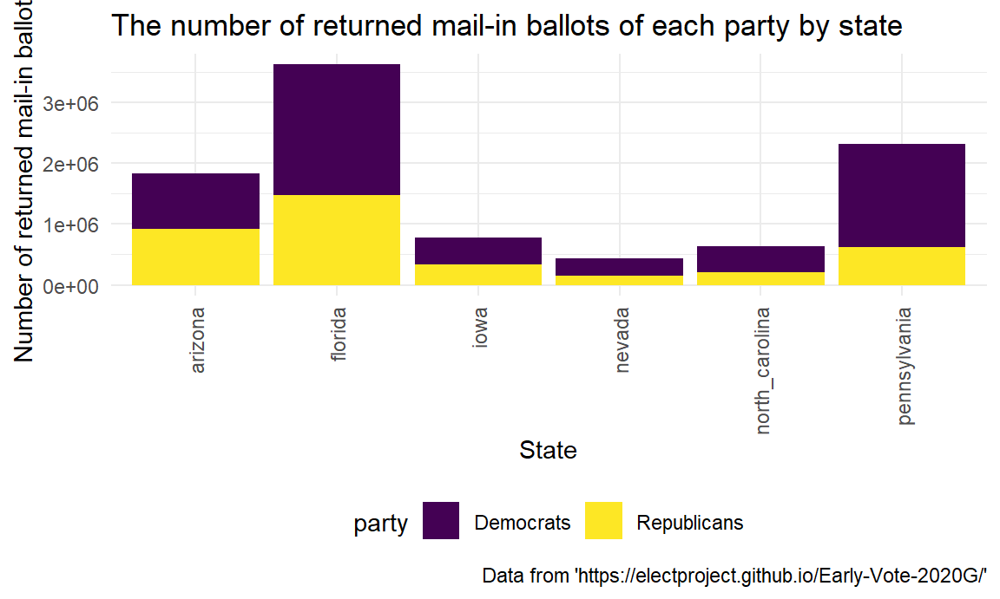

Mail-in ballots Democrats vs. Republicans
Comparison of both candidates’ mail-in votes
#Compare the number of mail-in ballots of dem/rep in each state
returnedballots_df =
read_csv("data/mail_in.csv") %>%
select(state, party, returned_ballots) %>%
filter(party %in% c("Democrats", "Republicans")) %>%
group_by(state, party) ## Parsed with column specification:
## cols(
## state = col_character(),
## party = col_character(),
## returned_ballots = col_number(),
## freq_distribution = col_double(),
## requested_ballots = col_number(),
## return_rate = col_double()
## )plot_returned_ballots =
returnedballots_df %>%
ggplot(aes(x = state, y = returned_ballots, fill = party)) +
geom_bar(stat="identity") +
theme(axis.text.x = element_text(angle = 90, vjust = 0.5, hjust = 1)) +
labs(
title = "The number of returned mail-in ballots of each party by state",
x = "State",
y = "Number of returned mail-in ballots",
caption = "Data from 'https://electproject.github.io/Early-Vote-2020G/'"
)#Compare the return rate of mail-in ballots for each party by state
returnrate_df =
read_csv("data/mail_in.csv") %>%
select(state, party, return_rate) %>%
filter(party %in% c("Democrats", "Republicans")) %>%
group_by(state, party) ## Parsed with column specification:
## cols(
## state = col_character(),
## party = col_character(),
## returned_ballots = col_number(),
## freq_distribution = col_double(),
## requested_ballots = col_number(),
## return_rate = col_double()
## )plot_return_rate =
returnrate_df %>%
ggplot(aes(x =return_rate, y = state, fill = party)) +
geom_bar(stat="identity", position=position_dodge()) +
theme(axis.text.x = element_text(angle = 90, vjust = 0.5, hjust = 1)) +
labs(
title = "The return rate of mail-in ballots for each party by state",
x = "Return rate of mail-in ballots",
y = "State",
caption = "Data from 'https://electproject.github.io/Early-Vote-2020G/'"
)knitr::opts_chunk$set(
fig.width = 6,
fig.asp = .6,
out.width = "90%"
)Overview
In the supporting rate comparison analysis, we compared the supporting rate of Democratic Party and the Republican Party in 17 battleground states in 2016 and 2020. The 17 Battleground states include Florida, Pennsylvania, Wisconsin,North Carolina, Michigan, Ohio, Minnesota, Iowa, Arizona, Nevada, Texas, Georgia, Virginia, New Hampshire Maine, Colorado, and New Mexico.
In 2016, 7 of the 17 battleground states have the Democratic supporting rates higher than the Republican supporting rates. In 2020, 12 of the 17 battleground states have the Democratic supporting rates higher than the Republican supporting rates. We observed that in each of the battleground states, the difference between Democratic supporting rate and Republican supporting rate has increased, except Florida and Ohio.
Relevant bar plots and table are attached.
Research question
In this part, we aimed to compare the supporting rates of two different parties in 17 key states in 2016 and 2020.
We made a bar plot for each year, comparing supporting rates of two parties in 17 key states. In addition, we calculated the differences of supporting rates in each state in each year and studied how much the Democratic led in each election.
Results
plot_returned_ballots
According to plot above, in 2016, 7 of the 17 battleground states have the Democratic supporting rates higher than the Republican supporting rates, including Colorado, Maine, Minnesota, Nevada, New Hampshire, New Mexico, and Virginia.
plot_return_rate
In 2020, 12 of the 17 battleground states have the Democratic supporting rates higher than the Republican supporting rates, including Arizona, Colorado, Georgia, Maine, Michigan, Minnesota, Nevada, New Hampshire, New Mexico, Pennsylvania, Virginia, and Wisconsin.
Compared to 2016, new blue states included Arizona, Georgia, Michigan, Pennsylvania, and Wisconsin.
The table above calculated the differences between Democratic supporting rates and Republican supporting rates (dem - rep) in 2016 and 2020.
We observed that in each of the battleground states, the difference between Democratic supporting rate and Republican supporting rate has increased, except Florida and Ohio. This result represents that the extent of how much the Democrat led has increased in 15 of the 17 key states.
Discussion
In 2016, only 7 of the 17 battleground states were blue states, which supported the Democratic party. However, in 2020, 12 of the 17 battleground states were blue states. Five new blue states included Arizona, Georgia, Michigan, Pennsylvania, and Wisconsin.
Of all the 17 states, we observed an increase in the extent of how much Democrat led in 15 states. Only Florida and Ohio had their Republican supporting rates increased in 2020.
Based on the analysis above, we could figure out that since the Democratic party led in most of the battleground states, it is reasonable to predict and understand why the Democratic would win.
# Conclusion
In the supporting rate comparison analysis, we compared the supporting rate of Democratic Party and the Republican Party in 17 battleground states in 2016 and 2020. Bar plots for 2016 and 2020, and a table comparing the differences of supporting rates in each state were developed.
In 2016, 7 of the 17 battleground states have the Democratic supporting rates higher than the Republican supporting rates. In 2020, 12 of the 17 battleground states have the Democratic supporting rates higher than the Republican supporting rates. We observed that in each of the battleground states, the difference between Democratic supporting rate and Republican supporting rate has increased, except Florida and Ohio.
Overall, larger proportions of people in these battleground states supported the Democratic party in 2020, compared to 2016.